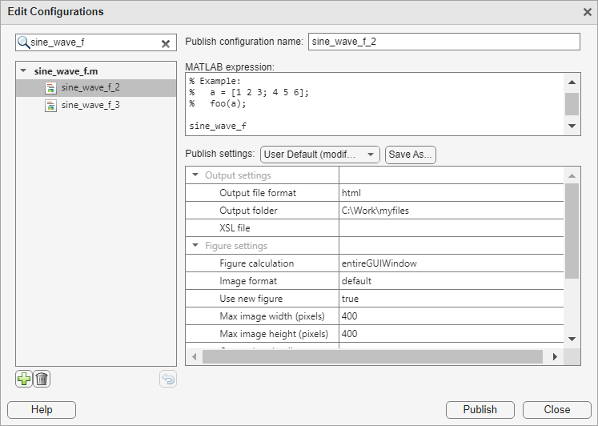
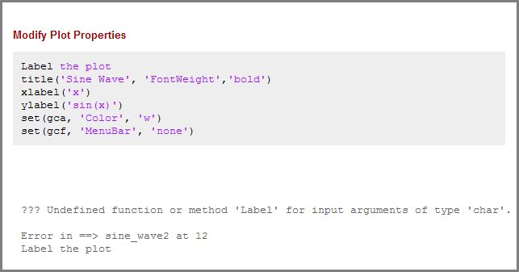
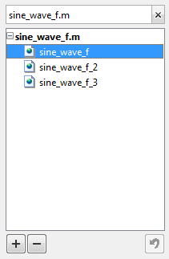

Output Settings for Publishing
How to Edit Publishing Options
Use the default publishing settings if your code requires no input arguments and you want to publish to HTML. However, if your code requires input arguments, or if you want to specify output settings, code execution, or figure formats, then specify a custom configuration.
Go to the Publish tab and select Publish
 .
.Select Edit Publishing Options.
In the Edit Configurations dialog box, specify output settings.
Use the MATLAB expression pane to specify the code that executes during publishing. Use the Publish settings pane to specify output, figure, and code execution options.
Together, the panes make what MATLAB® refers to as a publish configuration. MATLAB associates each publish configuration with an
.mfile. The name of the publish configuration is displayed at the top of the dialog box and is editable.

Specify Output File
You specify the output format and location on the Publish settings pane.
MATLAB publishes to these formats.
| Format | Notes |
|---|---|
html | Publishes to an HTML document. You can use an Extensible Stylesheet Language (XSL) file. |
xml | Publishes to XML document. You can use an Extensible Stylesheet Language (XSL) file. |
latex | Publishes to LaTeX document. Does not preserve syntax highlighting. You can use an Extensible Stylesheet Language (XSL) file. |
doc | Publishes to a Microsoft® Word document. Does not preserve syntax highlighting. This format is only available on Windows® platforms. |
ppt | Publishes to a Microsoft PowerPoint® document. Does not preserve syntax highlighting. This format is only available on Windows platforms. |
pdf | Publishes to a PDF document. |
Note
XSL files allow you more control over the appearance of the output document. For more details, see https://docbook.sourceforge.net/release/xsl/current/doc/.
Run Code During Publishing
Specifying Code
By default, MATLAB executes the .m file that you are publishing.
However, you can specify any valid MATLAB code in the MATLAB expression pane. For
example, if you want to publish a function that requires input, then run the
command
function(input)
Note
Publish configurations use the base MATLAB workspace. Therefore, a variable in the MATLAB expression pane overwrites the value for an existing variable in the base workspace.
Evaluating Code
Another way to affect what MATLAB executes during publishing is to set the Evaluate
code option in the Publish setting pane.
This option indicates whether MATLAB evaluates the code in the .m file that is
publishing. If set to true, MATLAB executes the code and includes the results in the output
document.
Because MATLAB does not evaluate the code nor include code results when you set
the Evaluate code option to false, there
can be invalid code in the file. Therefore, consider first running the file with
this option set to true.
For example, suppose that you include comment text, Label the
plot, in a file, but forget to preface it with the comment
character. If you publish the document to HTML, and set the Evaluate
code option to true, the output includes an error.

Use the false option to publish the file that contains the
publish function. Otherwise, MATLAB attempts to publish the file recursively.
Including Code
You can specify whether to display MATLAB code in the final output. If you set the Include
code option to true, then MATLAB includes the code in the published output document. If set to
false, MATLAB excludes the code from all output file formats, except HTML.
If the output file format is HTML, MATLAB inserts the code as an HTML comment that is not visible in the web
browser. If you want to extract the code from the output HTML file, use the
MATLAB
grabcode function.
For example, suppose that you publish
H:/my_matlabfiles/my_mfiles/sine_wave.m to HTML using a
publish configuration with the Include code option set to
false. If you share the output with colleagues, they can
view it in a web browser. To see the MATLAB code that generated the output, they can issue the following
command from the folder containing sine_wave.html:
grabcode('sine_wave.html')sine_wave.html in
the Editor.Catching Errors
You can catch and publish any errors that occur during publishing. Setting the
Catch error option to true includes
any error messages in the output document. If you set Catch
error to false, MATLAB terminates the publish operation if an error occurs during code
evaluation. However, this option has no effect if you set the Evaluate
code property to false.
Limiting the Amount of Output
You can limit the number of lines of code output that is included in the output document by specifying the Max # of output lines option in the Publish settings pane. Setting this option is useful if a smaller, representative sample of the code output suffices.
For example, the following loop generates 100 lines in a published output unless Max # of output lines is set to a lower value.
for n = 1:100 disp(x) end;
Manipulate Graphics in Publishing Output
Choosing an Image Format
When publishing, you can choose the image format that MATLAB uses to store any graphics generated during code execution. The available image formats in the drop-down list depend on the setting of the Figure capture method option. For greatest compatibility, select the default as specified in this table.
| Output File Format | Default Image Format | Types of Images You Can Include |
|---|---|---|
doc | png | Any format that your installed version of Microsoft Office supports. |
html | png | All formats publish successfully. Ensure that the tools you use to view and process the output files can display the output format you specify. |
latex | png or epsc2 | All formats publish successfully. Ensure that the tools you use to view and process the output files can display the output format you specify. |
pdf | bmp |
|
ppt | png | Any format that your installed version of Microsoft Office supports. |
xml | png | All formats publish successfully. Ensure that the tools you use to view and process the output files can display the output format you specify. |
Setting an Image Size
You set the size of MATLAB generated images in the Publish settings pane on the Edit Configurations dialog window. You specify the image size in pixels to restrict the width and height of images in the output. The pixel values act as a maximum size value because MATLAB maintains an image’s aspect ratio. MATLAB ignores the size setting for the following cases:
When working with external graphics as described in External Graphics
When using vector formats, such as
.epsWhen publishing to
.pdf
Capturing Figures
You can capture different aspects of the Figure window by setting the Figure capture method option. This option determines the window decorations (title bar, toolbar, menu bar, and window border) and plot backgrounds for the Figure window.
This table summarizes the effects of the various Figure capture methods.
| Use This Figure Capture Method | To Get Figure Captures with These Appearance Details | |
|---|---|---|
| Window Decorations | Plot Backgrounds | |
entireGUIWindow | Included for dialog boxes; Excluded for figures | Set to white for figures; matches the screen for dialog boxes |
| Excluded for dialog boxes and figures | Set to white | |
getframe | Excluded for dialog boxes and figures | Matches the screen plot background |
entireFigureWindow | Included for dialog boxes and figures | Matches the screen plot background |
Note
Typically, MATLAB figures have the HandleVisibility property
set to on. Dialog boxes are figures with the
HandleVisibility property set to
off or callback. If your results
are different from the results listed in the preceding table, the
HandleVisibility property of your figures or dialog
boxes might be atypical. For more information, see HandleVisibility.
Specifying a Custom Figure Window
MATLAB allows you to specify custom appearance for figures it creates. If
the Use new figure option in the Publish
settings pane is set to true, then in the
published output, MATLAB uses a Figure window at the default size and with a white
background. If the Use new figure option is set to
false, then MATLAB uses the properties from an open Figure window to determine the
appearance of code-generated figures. This setting does not apply to figures
included using the syntax in External Graphics.
Use the following code as a template to produce Figure windows that meet your needs.
% Create figure figure1 = figure('Name','purple_background',... 'Color',[0.4784 0.06275 0.8941]); colormap('hsv'); % Create subplot subplot(1,1,1,'Parent',figure1); box('on'); % Create axis labels xlabel('x-axis'); ylabel({'y-axis'}) % Create title title({'Title'});

% Enable printed output to match colors on screen set(figure1,'InvertHardcopy','off')
By publishing your file with this window open and the Use new
figure option set to false, any code-generated
figure takes the properties of the open Figure window.
Note
You must set the Figure capture method option to entireFigureWindow for the final published figure to display all the properties of the open Figure window.
Creating a Thumbnail
You can save the first code-generated graphic as a thumbnail image. You can use this thumbnail to represent your file on HTML pages. To create a thumbnail, follow these steps:
On the Publish tab, click Publish
and select Edit
Publishing Options. The Edit Configurations dialog box
opens.Set the Image Format option to a bitmap format, such as
.pngor.jpg. MATLAB creates thumbnail images in bitmap formats.Set the Create thumbnail option to
true.MATLAB saves the thumbnail image in the folder specified by the Output folder option in the Publish settings pane.
Save a Publish Setting
You can save your publish settings, which allows you to reproduce output easily. It can be useful to save your commonly used publish settings.

When the Publish settings options are set, you can follow these steps to save the settings:
Click Save As when the options are set in the manner you want.
The Save Publish Settings As dialog box opens and displays the names of all the currently defined publish settings. By default the following publish settings install with MATLAB:
Factory DefaultYou cannot overwrite the
Factory Defaultand can restore them by selectingFactory Defaultfrom the Publish settings list.User DefaultInitially,
User Defaultsettings are identical to theFactory Defaultsettings. You can overwrite theUser Defaultsettings.
In the Settings Name field, enter a meaningful name for the settings. Then click Save.
You can now use the publish settings with other MATLAB files.
You also can overwrite the publishing properties saved under an existing name. Select the name from the Publish settings list, and then click Overwrite.
Manage a Publish Configuration
Together, the code in the MATLAB expression pane and the settings in the Publish settings pane make a publish configuration that is associated with one file. These configurations provide a simple way to refer to publish settings for individual files.
To create a publish configuration, on the Publish tab, click
Publish
 , and select Edit Publishing
Options. The Edit Configurations dialog box opens, containing the
default publish settings. In the Publish configuration name
field, type a name for the publish configuration, or accept the default name. The
publish configuration saves automatically.
, and select Edit Publishing
Options. The Edit Configurations dialog box opens, containing the
default publish settings. In the Publish configuration name
field, type a name for the publish configuration, or accept the default name. The
publish configuration saves automatically.
Running an Existing Publish Configuration
After saving a publish configuration, you can run it without opening the Edit Configurations dialog box:
Click Publish
. If you position your mouse pointer
on a publish configuration name, MATLAB displays a tooltip showing the MATLAB expression associated with the specific configuration.
Select a configuration name to use for the publish configuration. MATLAB publishes the file using the code and publish settings associated with the configuration.
Creating Multiple Publish Configurations for a File
You can create multiple publish configurations for a given file. You might do this to publish the file with different values for input arguments, with different publish setting property values, or both. Create a named configuration for each purpose, all associated with the same file. Later you can run whichever particular publish configuration you want.
Use the following steps as a guide to create new publish configurations.
Open a file in your Editor.
Click the Publish button drop-down arrow, and select Edit Publishing Options. The Edit Configurations dialog box opens.
Click the Add button located on the left pane.
A new name appears on the configurations list,
filename_n, where the value ofndepends on the existing configuration names.
If you modify settings in the MATLAB expression or Publish setting pane, MATLAB automatically saves the changes.
Reassociating and Renaming Publish Configurations
Each publish configuration is associated with a specific file. If you move or rename a file, redefine its association. If you delete a file, consider deleting the associated configurations, or associating them with a different file.
When MATLAB cannot associate a configuration with a file, the Edit Configurations dialog box displays the file name in red and a File Not Found message. To reassociate a configuration with another file, perform the following steps.
Click the Clear search button on the left pane of the Edit Configurations dialog box.
Select the file for which you want to reassociate publish configurations.
In the right pane of the Edit Configurations dialog box, click Choose.... In the Open dialog box, navigate to and select the file with which you want to reassociate the configurations.
You can rename the configurations at any time by selecting a configuration from the list in the left pane. In the right pane, edit the value for the Publish configuration name.
Note
To run correctly after a file name change, you might need to change the code statements in the MATLAB expression pane. For example, change a function call to reflect the new file name for that function.
Using Publish Configurations Across Different Systems
Each time you create or save a publish configuration using the Edit
Configurations dialog box, the Editor updates the
publish_configurations.m file in your settings folder.
(This is the folder that MATLAB returns when you run the MATLAB
prefdir function.)
Although you can port this file from the settings folder on one system to
another, only one publish_configurations.m file can exist on
a system. Therefore, only move the file to another system if you have not
created any publish configurations on the second system. In addition, because
the publish_configurations.m file might contain references to
file paths, be sure that the specified files and paths exist on the second
system.
MathWorks® recommends that you not update
publish_configurations.m in the MATLAB Editor or a text editor. Changes that you make using tools other
than the Edit Configurations dialog box might be overwritten later.